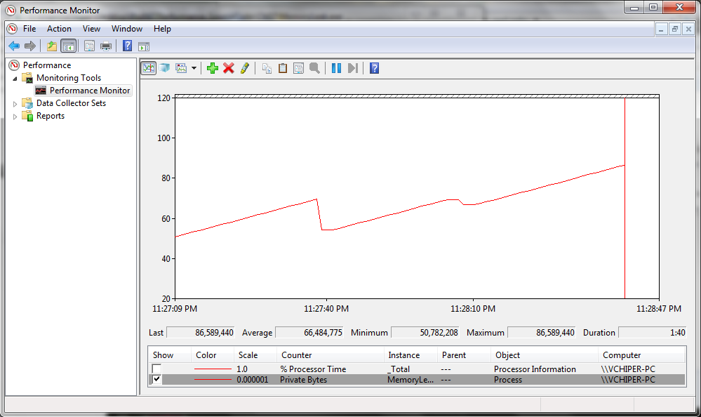

Профилирование времени (MiniProfiler)

Требования к производительности
Характеристики производительности
Высокая отзывчивость при одновременном доступе нескольких пользователей.
Низкий объем потребления памяти при небольшом количестве посетителей.
| Веб-сервер | Время на обработку запроса не более 300 мс | Одновременно не более 300 запросов в секунду |
| Клиентское приложение | Время запуска не должно превышать 1500 мс | 8 Гб оперативной памяти |
| Клиентское ПО | Нагрузка на ЦП в режиме простоя не должна превышать 1% | Процессор Intel Core i7 4790 3,6 ГГц или AMD FX-9590 4,7 ГГц |
| Нагрузка на CPU | % |
| Использование памяти | Килобайты, мегабайты, гигабайты |
| Время выполнения | Миллисекунды |
| Сборка мусора | Продолжительность % от общего времени выполнения |
| Попадания в кэш | Количество попаданий в секунду |
Выделение требований по основным характеристикам производительности
Тестирование прототипов на этапе разработки
Нагрузочное тестирование системы перед каждым новым релизом
Счетчики производительности (performance counters)
Профилировщики времени
Профилировщики памяти
Микрохронометраж (microbenchmarking)

public class Program
{
// Создание категории счетчика
public static void CreateCounterCategory()
{
if (PerformanceCounterCategory.Exists("MyUsers"))
PerformanceCounterCategory.Delete("MyUsers");
CounterCreationDataCollection counters = new CounterCreationDataCollection
{
new CounterCreationData("# Пользователи онлайн", "Количество пользователей в приложении",
PerformanceCounterType.NumberOfItems32)
};
PerformanceCounterCategory.Create("MyUsers", "Информация о пользователях онлайн", counters);
}
// Метод запуска счетчика
public static void StartUpdatingCounters()
{
PerformanceCounter usersAtWork = new PerformanceCounter("MyUsers", "# Пользователи онлайн", false);
Timer updateTimer = new Timer(_ => usersAtWork.RawValue = MyUsers.UsersCount,
null, TimeSpan.Zero, TimeSpan.FromSeconds(1));
}
}StackExchange MiniProfiler http://miniprofiler.com/
JetBrains dotTrace https://www.jetbrains.com/profiler/